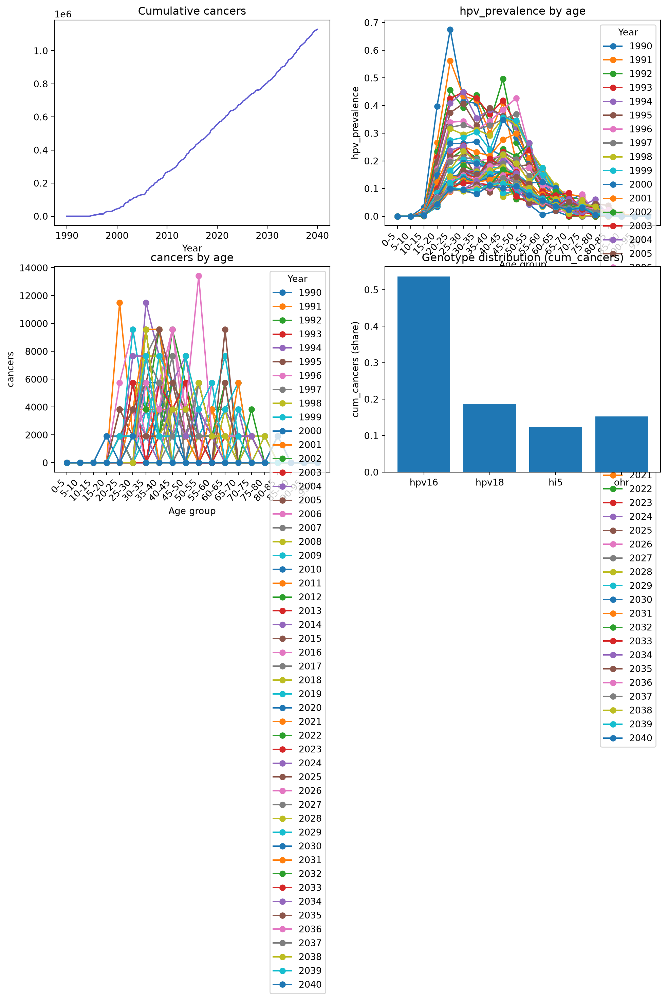

In this tutorial we take one finished run and get four things out of it: a single-panel figure, an HPV summary figure, a table you can hand to a spreadsheet, and a saved file you can reopen next week.
The run we will use
import numpy as npimport pandas as pdimport starsim as ssimport hpvsim as hpvsim = hpv.Sim( location ='nigeria', genotypes = [16, 18, 'hi5', 'ohr'], n_agents =2000, start =1990, stop =2040, ms_agent_ratio =25, verbose =0, # No progress messages analyzers = [hpv.by_age(['cancers', 'hpv_prevalence'])], label ='Nigeria baseline',)sim.run()
verbose=0 keeps the run silent, and verbose=-1 silences the setup messages too. Setting verbose=0.25 prints an update once a simulated year, which is what you want when a run is long enough that you start wondering whether it is stuck.
One result at a time
Name any result and you get one panel:
fig = sim.plot('asr_cancer_incidence')
Figure(768x576)
Pass a list of fully-qualified names for several panels. Names are the module name and the result name joined by an underscore:
Calling sim.plot() with no argument plots every result from every module, which for a four-genotype run is over sixty panels. Useful when you are hunting a problem, unreadable otherwise. sim.plot('all_hpv') narrows it to the pooled HPV results.
The HPV summary figure
hpv.plot_sim draws the four panels an HPV modeller usually wants first: cumulative cancers, HPV prevalence by age, cancers by age, and which genotypes are causing the cancers. It needs a hpv.by_age analyzer recording cancers and a prevalence, which is why we attached one above:
fig = hpv.plot_sim(sim)
/home/robyn/hpvsim/hpvsim/plotting.py:415: UserWarning: Tight layout not applied. tight_layout cannot make Axes height small enough to accommodate all Axes decorations.
fig.tight_layout()

Read the bottom-right panel against genotyping studies for your country. If your run puts almost everything in the pooled hi5 and ohr groups while your data puts it in HPV16 and HPV18, the per-genotype transmission parameters need attention before you trust anything downstream.
Every result shares the time axis in sim.results.timevec, so assembling a tidy table is a few lines. Slicing a result with [:] gives you the underlying array:
Counts like new_cancers are per timestep, not per year. At the default quarter-year timestep there are four rows per calendar year, so a yearly total is the sum of all four. annualize() does that for you and returns one row per year:
annual = sim.results.all_hpv.new_cancers.annualize()annual_years = np.floor(annual.timevec.years).astype(int)print('Cancers in 2035:', round(float(annual.values[annual_years ==2035][0])))
Cancers in 2035: 36407
An annualized timestamp sits in the middle of its year, so match on np.floor of the year rather than on equality.
Printing a run
summarize() prints the last value of every result — a quick check that nothing came out as zero or a NaN:
import pylab as pltsim.plot('asr_cancer_incidence')plt.gcf().savefig('my-incidence.png', dpi=150)
Figure(768x576)
<Figure size 672x480 with 0 Axes>
Save a whole run with sim.save() and reopen it with ss.load(). Saving strips the random number generators and internal cross-references first, so the file stays around a megabyte. You can stop a run partway, save, reload, and carry on:
hpv.options sets defaults for every HPVsim figure — resolution, font size, and plot style. hpv.options.help() lists them all. The two built-in styles are 'hpvsim' (the default) and 'simple', and any Matplotlib style name also works: